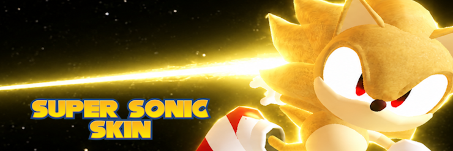
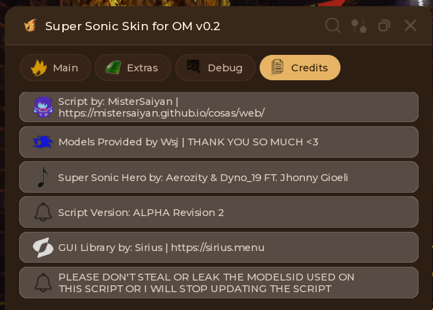
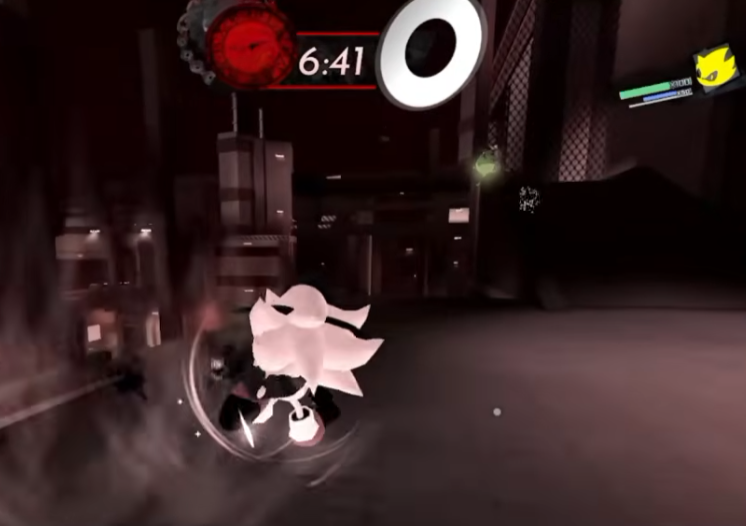
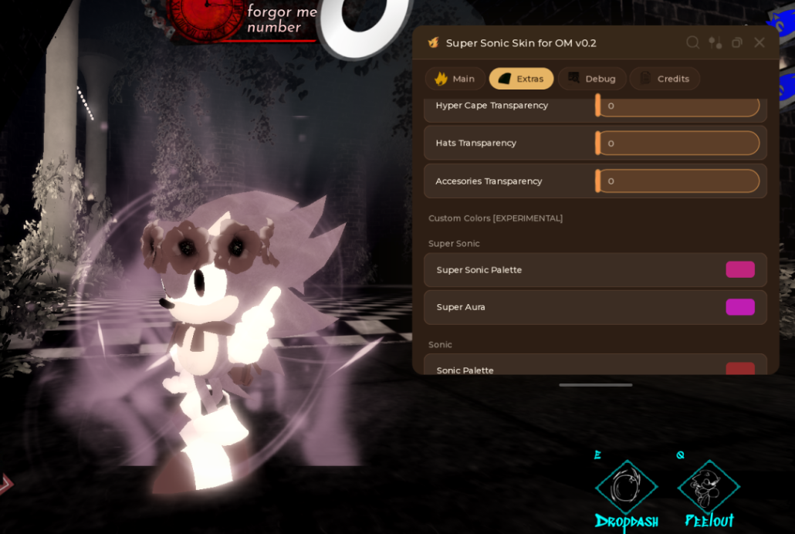

Alpha Revision 2 | Outcome Memories

Silly Super Sonic Skin is a small concept skin for Outcome Memories, Based around my old what if super sonic was a milestone skin, Made way before the anniversary update.
This is just an visual skin for yourself, no one can see it but you are still in a risk of getting flagged by roblox or if you record a video and you don't censor your name
This script includes:
loadstring(game:HttpGet("https://raw.githubusercontent.com/MisterSaiyan/cosas/refs/heads/main/scripts/SillySSonic/SillySSonicLS.lua"))()


